3.2 工程管理与版本
工程是你所有设计的“文件夹”。这一页讲怎么新建、另存、导入导出、打印工程；以及三种“后悔药”：撤销、历史记录、版本控制（节点和分支）。
工程管理：「文件」菜单#
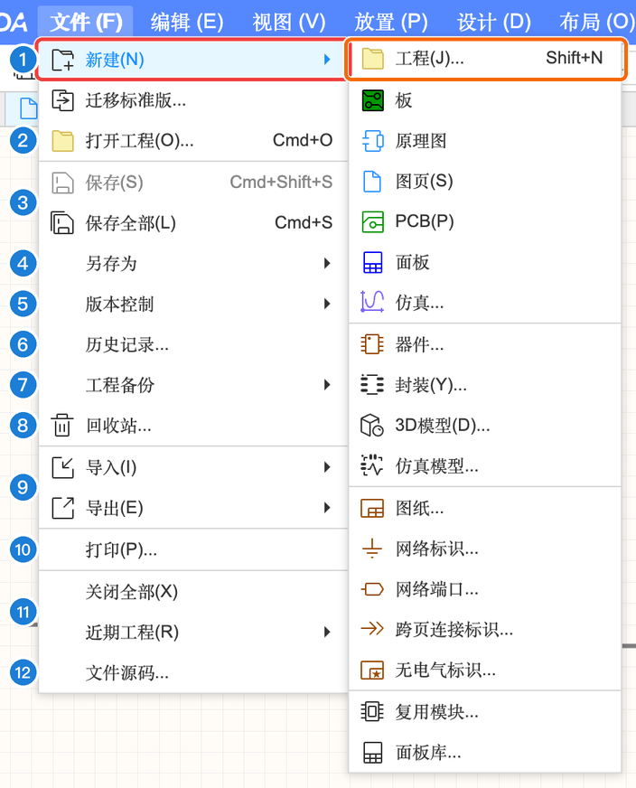
文件菜单
| 编号 | 菜单项 | 作用 |
|---|---|---|
| 1 | 新建 | 新建工程（⇧N）、板、原理图、图页、PCB、面板、仿真、器件、封装、3D 模型、仿真模型、图纸、网络标识、网络端口、跨页连接标识、无电气标识、复用模块、面板库 |
| 2 | 迁移标准版… / 打开工程… | 把嘉立创EDA 标准版的工程迁移过来；打开其他工程（⌘O） |
| 3 | 保存 / 保存全部 | 保存当前文档（⌘⇧S）/ 保存所有打开的文档（⌘S） |
| 4 | 另存为 | 见下方子菜单 |
| 5 | 版本控制 | 创建分支、创建节点、版本管理（见 A.5） |
| 6 | 历史记录… | 打开右侧历史记录面板（见 A.5） |
| 7 | 工程备份 | 找回自动备份（自动备份在「设置」→「保存」里开） |
| 8 | 回收站… | 打开网页版回收站，找回删掉的工程（见下） |
| 9 | 导入 / 导出 | 见下方子菜单 |
| 10 | 打印… | 打开「导出文档」对话框（PDF / PNG / SVG） |
| 11 | 关闭全部 / 近期工程 | 关闭所有标签；快速打开最近用过的工程 |
| 12 | 文件源码… | 查看当前文档的底层数据（高级用途） |
另存为、导入、导出#
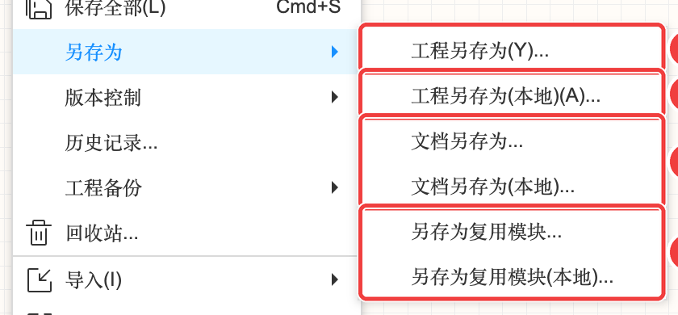
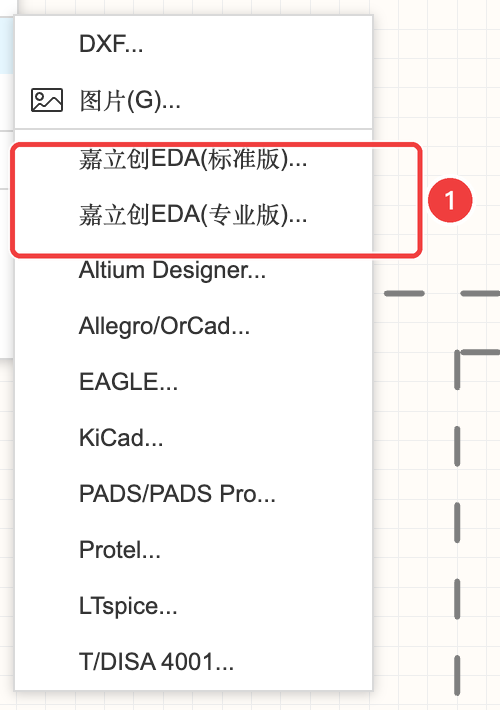
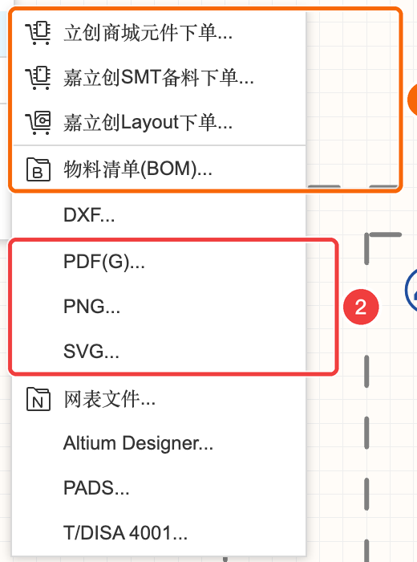
- 工程另存为(本地)：把整个工程下载成一个文件存到电脑——相当于“打包备份”，交作业、发给同学都用它。
- 导入其他软件的工程：老师给的 Altium（Protel）、KiCad 文件都能导进来，详见第 12 章。
- 导出菜单里的制造文件（Gerber、BOM、坐标）在 PCB 编辑器里才全，见 A-10。
回收站#
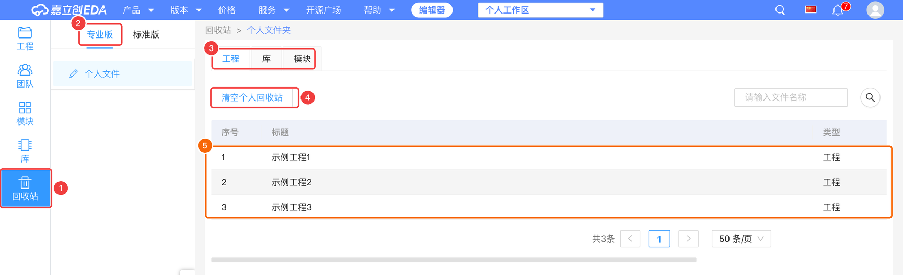
删掉的工程不会马上消失，会先进回收站，可以在这里恢复。「清空个人回收站」之后就真的找不回了。
打印 / 导出文档#
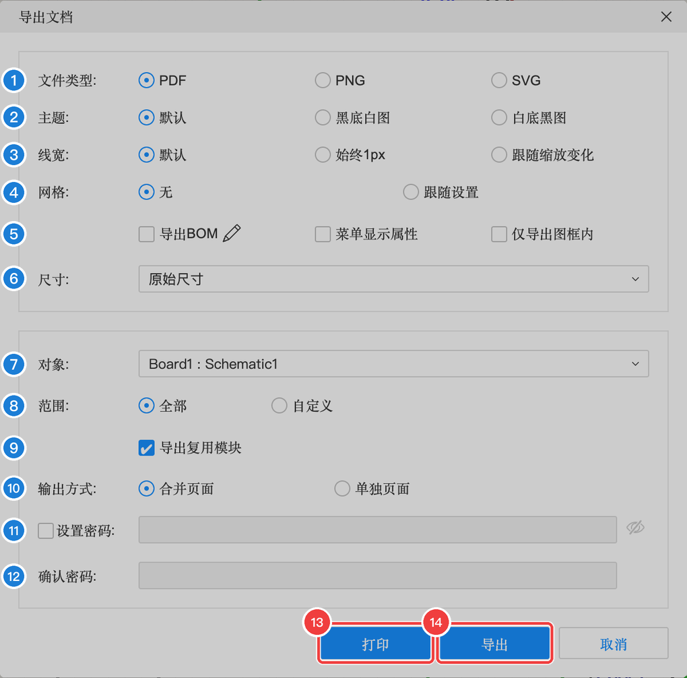
导出文档（打印）
| 编号 | 选项 | 含义 | 交作业时 |
|---|---|---|---|
| 1 | 文件类型 | PDF / PNG / SVG | |
| 2 | 主题 | 默认颜色 / 黑底白图 / 白底黑图 | 打印选白底黑图更省墨 |
| 3 | 线宽 | 默认 / 始终 1px / 跟随缩放 | 默认 |
| 4 | 网格 | 不带网格 / 跟随设置 | 无 |
| 5 | 导出 BOM、菜单显示属性、仅导出图框内 | 是否顺带导出元件清单等 | 按需 |
| 6 | 尺寸 | 原始尺寸或指定纸张 | 原始尺寸 |
| 7 | 对象 | 导出哪个原理图（或 PCB） | — |
| 8 | 范围 | 全部图页 / 自定义选择 | 全部 |
| 9 | 导出复用模块 | 是否一起导出复用模块的内容 | 默认 |
| 10 | 输出方式 | 多页合并成一个文件 / 每页一个文件 | 合并 |
| 11 | [12] 设置密码 / 确认密码 | 给 PDF 加密码 | 一般不用 |
| 13 | 打印 | 直接调用系统打印 | |
| 14 | 导出 | 生成文件下载 |
工程设置（设计 → 工程设置…）#
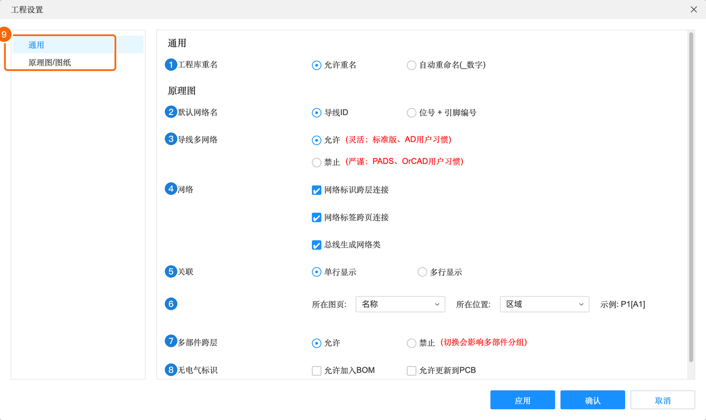
「设置」菜单里的是个人设置（对你所有工程生效）；「工程设置」是这个工程自己的规则，跟着工程走，同学打开你的工程也是这些规则。
工程设置
| 编号 | 选项 | 含义 |
|---|---|---|
| 1 | 工程库重名 | 允许重名 / 自动重命名 |
| 2 | 默认网络名 | 导线 ID / 位号+引脚编号 |
| 3 | 导线多网络 | 允许 / 禁止一根导线挂多个网络名 |
| 4 | 网络 | 网络标识跨层连接、网络标签跨页连接、总线生成网络类——决定同名标签在不同页之间是否自动连通（4.2 详解） |
| 5 | 关联 | 网络标签旁“还在哪页出现”的提示怎么显示 |
| 6 | 所在图页 / 所在位置 | 关联提示的格式，示例 P1[A1] |
| 7 | 多部件跨层 | 允许 / 禁止 |
| 8 | 无电气标识 | 是否允许加入 BOM、更新到 PCB |
| 9 | 左侧分类 | 通用 / 原理图/图纸 |
三种“后悔药”：撤销、历史记录、版本#
| 撤销 ⌘Z | 历史记录 | 版本控制（节点 / 分支） | |
|---|---|---|---|
| 能退回多远 | 本次打开以来的几步 | 每次保存都会记一条，可以回到很久以前 | 你手动打的“存档点” |
| 关掉网页后 | 没了 | 还在 | 还在 |
| 比喻 | 按住退格键 | 手机相册里的“最近删除” | 游戏存档 |
历史记录#
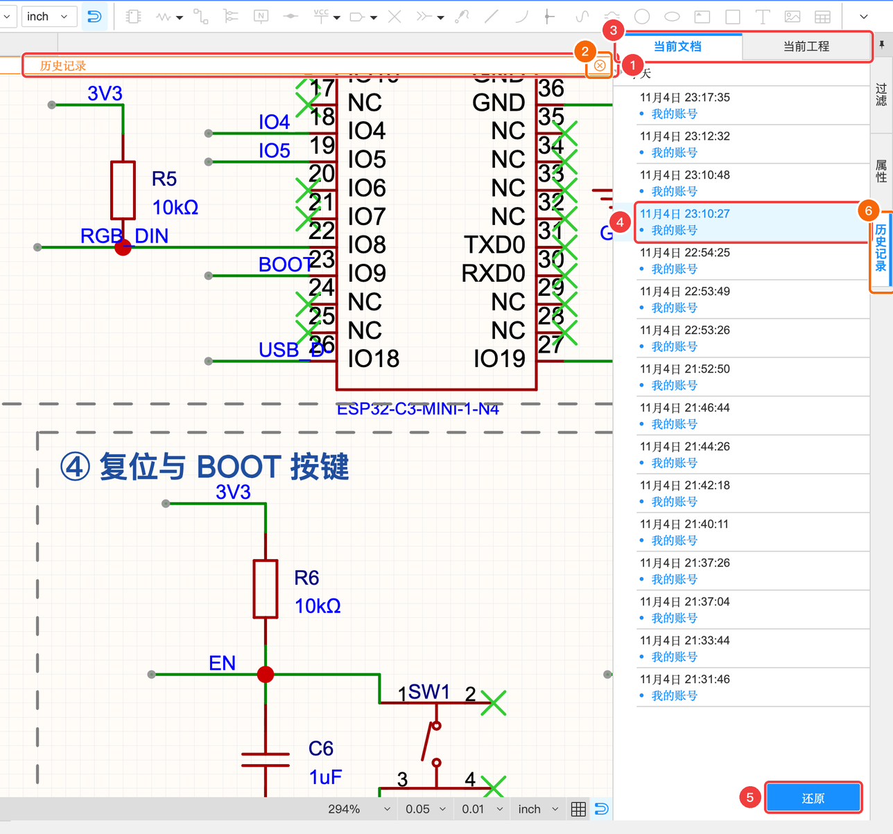
- 「文件」→「历史记录…」，右侧出现历史记录面板，按时间列出每次保存
- 点某一条，画布就显示那个时候的样子（只是预览，不会改你的文件）
- 确定要回到那个版本，点面板底部「还原」
- 只是看看的话，点画布上方橙色提示条最右边的 ⊗ 退出历史模式
版本控制：节点和分支#
想象你在写论文：
- 节点 = 给当前状态拍一张快照，起个名字，比如“V1 能用了”。以后改坏了随时能回来。
- 分支 = 从某个快照复制出一条平行的路，在上面随便试（比如“试试换成 Type-C 16P”），主线 main 完全不受影响。试成了再用，试失败了就扔掉。
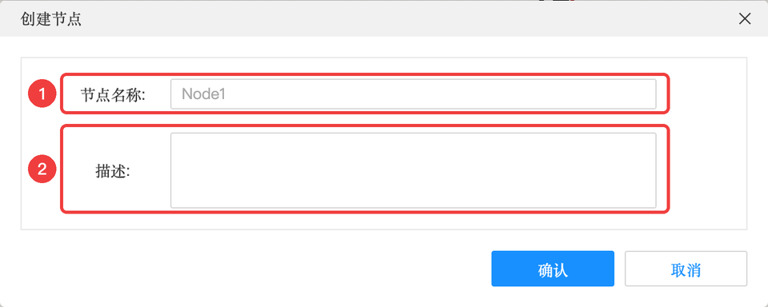
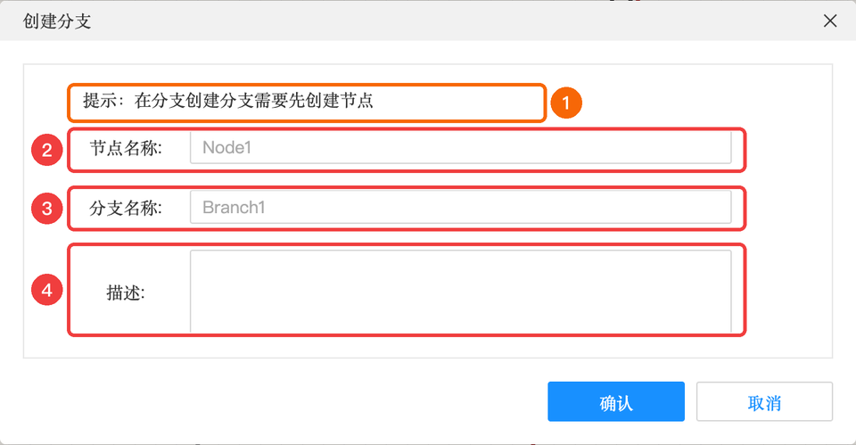
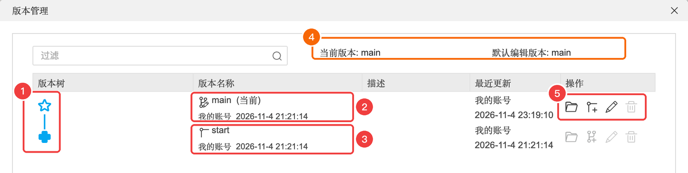
- 做到一个满意的阶段：「文件」→「版本控制」→「创建节点」，起名“原理图完成”
- 想做大改动：「版本控制」→「创建分支」，从刚才的节点分出一个分支，起名“试试新方案”
- 在「版本管理」里可以看到版本树，选中某个版本点「打开」切换过去
- 工程树最上面的
main小标签就是你当前所在的分支